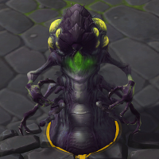
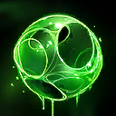
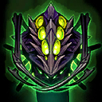
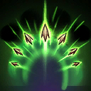
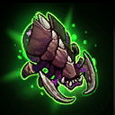
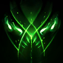
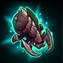
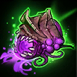
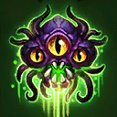
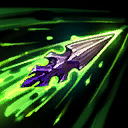

Abathur
Welcome to our Abathur guide for Heroes of the Storm. Here you will learn everything you need to know in order to play Abathur in a competitive environment, whether you play on your own or with a team.
Carapace Build
| Level 1 | Level 4 | Level 7 | Level 10 | Level 13 | Level 16 | Level 20 |
|---|---|---|---|---|---|---|
|  |  |  |
The Carapace Icon Carapace Build focuses on talenting Carapace into a powerful and versatile Ability. This build provides great map pressure and out of combat healing to allies, but lacks on demand team fight damage. Regenerative Microbes Icon Regenerative Microbes should be used to heal allied units constantly. Sustained Carapace Icon Sustained Carapace allows you to get the full duration of Carapace's various effects, even when you cancel Symbiote Icon Symbiote immediately after casting Carapace. This essentially enables full value casting of Carapace every 4 seconds. Networked Carapace Icon Networked Carapace provides minor utility during team fights, but is very strong when pushing Minion waves remotely. While Evolve Monstrosity Icon Evolve Monstrosity deals massive team fight damage in ideal situations, it must be stacked ahead of time in order to be effective. It is best if you do not spend much time controlling the Monstrosity until you get Adrenaline Boost Icon Adrenaline Boost at Level 16. Allow it to pressure in an empty lane, while you soak experience with your body and Symbiote. It is possible to gather experience from three lanes at once when using this method, especially while teams rotate to map objectives. This build path is recommended in team compositions that can effectively draw out fights and objectives while you create an experience lead and threaten Structures. It is not recommended for use in dive compositions that require your allies to fully commit to team fights.
Locust Strain Build
| Level 1 | Level 4 | Level 7 | Level 10 | Level 13 | Level 16 | Level 20 |
|---|---|---|---|---|---|---|
|  |  |  |  |
The Locust Strain Icon Locust Strain Build focuses on talents that produce and enhance Locusts. It excels at creating debilitating static pressure in lanes of your choosing. The Carapace talents included in this build allow you to preventatively shield your Minion waves and allies. Unlike the Carapace Build, you can have a significant impact on mid-game team fights via Ultimate Evolution Icon Ultimate Evolution. This build path is highly recommended against enemy team compositions that lack strong waveclear, as they will have to spend more time and resources answering your push. While an enemy is clearing your Locusts, your team can engage a favourable team fight.
Symbiote Build
| Level 1 | Level 4 | Level 7 | Level 10 | Level 13 | Level 16 | Level 20 |
|---|---|---|---|---|---|---|
|  |  |
The Symbiote Build maximises Abathur's team fight presence by taking Talents that improve Symbiote's damage dealing Abilities. This team fight presence comes at the cost of global pressure, as you will lack the huge lane pressure provided by other builds. Although this is not a build that focuses on pushing lanes, it is still important to soak as much experience as possible with it. Due to the short range of Symbiote's Abilities, this build is ideally paired with a melee hyper-carry who benefits from increased attack speed.
Go Back